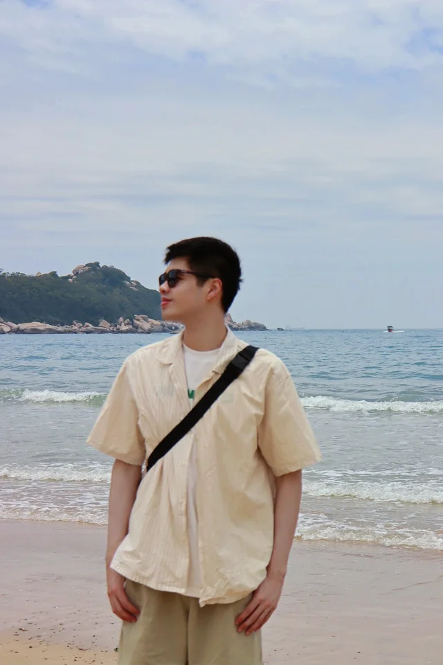

We introduce TimeLens2, a next-generation model family and training corpus for generalist video temporal grounding.
Jun Zhang (张峻)
I am a Researcher/Engineer at JoyAI, Joy Future Academy (京东探索研究院), JD.com through the TGT (Tech Genius Team) Program, working with Qingyi Si, Jiaqi Wang, and Nan Duan.
I am currently part of the LLM Foundation Model Team, focusing on:
- Multimodal LLMs
- Video Understanding (Video LLMs)
- Post-training (RL & SFT)
I received my B.S. and M.S. degrees in Computer Science from Nanjing University (南京大学) in 2023 and 2026, respectively. I was a member of the MCG Group, advised by Prof. Limin Wang.
Previously, I was an intern in the Foundation Model Team at StepFun (阶跃星辰), and before that, a research intern at Tencent ARC Lab.
Open positions We are currently hiring for both full-time and internship positions for the TGT program. Please feel free to reach out if you are interested!

News
Our new paper VideoChat3, a fully open video MLLM for efficient and generalist video understanding, is now on arXiv!
We released Step 3.7 Flash.
TimeLens: Rethinking Video Temporal Grounding with Multimodal LLMs is accepted by CVPR 2026! Website ↗
Check our new paper TimeLens. We expose critical quality issues in existing VTG benchmarks, propose quality-assured datasets, and release state-of-the-art open-source grounding models. Website ↗
p-MoD is accepted by ICCV 2025!
Publications
arXiv 2026
VideoChat3: Fully Open Video MLLM for Efficient and Generalist Video Understanding
Experience
Full-time · Foundation Model Team at JoyAI, Joy Future Academy (京东探索研究院), JD.com
Working on multimodal large language models and video understanding with Qingyi Si, Jiaqi Wang, and Nan Duan.
Intern · Foundation Model Team at StepFun (阶跃星辰)
Worked on multimodal post-training and video understanding with Liang Zhao and Zejia Weng.
Research Intern at Tencent ARC Lab
Worked on multimodal post-training and video understanding with Dr. Yixiao Ge, Dr. Teng Wang, and Dr. Yuying Ge.